Trắc nghiệm tương tác cho giáo viên và học sinh: tài khoản quản trị, tài khoản giáo viên, phòng chơi trên máy tính, máy tính bảng và điện thoại, chế độ thẻ trả lời giấy.
Phiên bản máy chủ 1.6.2Cập nhật 17/11/2026Bản dành cho người dùng
Tác giả: Nguyễn Thanh Liêm
Zalo: 0888358363
Tài khoản và mật khẩu trong tài liệu là tài khoản demo, chỉ dùng để tham khảo và thử trên máy thử.
Mục lục
Phần 1 · Làm quen với phần mềm
1. Quickplay là gì, dùng để làm gì
2. Các vai trò: quản trị, giáo viên, học sinh
3. Thiết bị và trình duyệt được hỗ trợ
4. Tài khoản demo dùng trong tài liệu này
Phần 2 · Quản trị hệ thống
5. Đăng nhập tài khoản quản trị
6. Cài máy chủ tài khoản (làm một lần)
7. Cấp, khóa, đặt lại mật khẩu, xóa tài khoản giáo viên
8. Sao lưu và chuyển máy chủ tài khoản
Phần 3 · Giáo viên
9. Đăng nhập lần đầu và kết nối Google Drive
10. Thư mục Google Drive riêng của giáo viên
11. Email khôi phục và quên mật khẩu
12. Cập nhật phiên bản mới
13. Giao diện trên máy tính, máy tính bảng, điện thoại
14. Thư viện đề: tạo, nhập, sắp xếp bộ đề
15. Trình soạn câu hỏi và các dạng câu hỏi
16. Chia sẻ bộ đề và câu hỏi cho giáo viên khác
17. Lớp học, mã số học sinh và kho đề thi
18. Tổ chức buổi học: năm cách làm
19. Phòng điều khiển của giáo viên
20. Báo cáo, cài đặt, sao lưu
21. Thẻ trả lời giấy
Phần 4 · Học sinh
22. Vào phòng bằng mã PIN, link hoặc mã QR
23. Chơi trên điện thoại, máy tính bảng, máy tính
24. Làm bài kiểm tra bằng mã số học sinh
25. Điểm, điểm thưởng và mức đánh giá
Phần 5 · Phụ lục
26. Xử lý sự cố thường gặp
27. Giới hạn cần biết
Phần 1 · Làm quen với phần mềm
1. Quickplay là gì, dùng để làm gì
Quickplay là phần mềm trắc nghiệm tương tác chạy trên trình duyệt. Giáo viên soạn bộ câu hỏi, tổ chức cho cả lớp làm bài trực tiếp hoặc giao bài về nhà, và xem báo cáo từng lớp. Học sinh không cần tài khoản: vào phòng bằng mã PIN, link hoặc mã QR. Toàn bộ dữ liệu bài học (bộ câu hỏi, lớp, kết quả) được lưu trong Google Drive riêng của từng giáo viên; phần mềm không giữ dữ liệu này trên máy chủ chung.
Ý chính: mỗi giáo viên có kho dữ liệu riêng trên Google Drive của mình. Quản trị chỉ cấp và quản lý tài khoản đăng nhập; quản trị không đọc được bộ câu hỏi và kết quả của giáo viên.
2. Các vai trò: quản trị, giáo viên, học sinh
Vai trò
Làm được gì
Đăng nhập thế nào
Quản trị (admin)
Cài máy chủ tài khoản; cấp, khóa, mở khóa, đặt lại mật khẩu và xóa tài khoản giáo viên; sao lưu danh sách tài khoản.
Trang chủ → Dành cho giáo viên → chọn Quản trị (admin) → tên đăng nhập và mật khẩu quản trị.
Giáo viên
Soạn đề, nhập và chia sẻ bộ đề, tổ chức buổi học, điều khiển phòng, xem báo cáo, cấu hình thư mục Google Drive của mình.
Trang chủ → Dành cho giáo viên → chọn Giáo viên → tên đăng nhập và mật khẩu do quản trị cấp.
Học sinh
Vào phòng chơi hoặc làm bài kiểm tra, trả lời câu hỏi, xem điểm và phiếu kết quả của mình.
Trang chủ → phòng chơi hoặc mở link/QR thầy cô gửi. Nhập mã PIN, tên và lớp. Không cần tài khoản.
3. Thiết bị và trình duyệt được hỗ trợ
Thiết bị
Dùng để
Máy tính (khoảng 1366 px trở lên)
Soạn đề, quản lý thư viện, điều khiển phòng, xem báo cáo. Đây là khổ đầy đủ nhất.
Máy tính bảng (khoảng 820 px)
Soạn đề, điều khiển phòng, học sinh làm bài. Bố cục tự thu gọn.
Điện thoại (khoảng 390 px)
Học sinh làm bài là chính. Giáo viên có thể mở phòng, bắt đầu, chuyển câu và xem thống kê. Với thao tác soạn đề dài, nên dùng máy tính hoặc máy tính bảng.
Trình duyệt khuyến nghị: Chrome, Edge hoặc Safari bản mới. Cần có Internet để vào phòng và đồng bộ với Google Drive.
4. Tài khoản demo dùng trong tài liệu này
Tài khoản demo (chỉ để tham khảo):
• Giáo viên: gvdemo · mật khẩu demo: Demo@2026
• Quản trị: tên đăng nhập adminquantri · mật khẩu demo do người hướng dẫn đặt khi thiết lập máy thử.
Đây là dữ liệu thử nghiệm, không phải tài khoản thật. Tài liệu không ghi tài khoản quản trị thật hay mật khẩu thật. Khi triển khai thật, quản trị đặt mật khẩu riêng và chỉ giao cho người được phép.
Phần 2 · Quản trị hệ thống
Quản trị chỉ làm một lần khi cài máy chủ, sau đó thường xuyên làm việc với danh sách tài khoản giáo viên.
5. Đăng nhập tài khoản quản trị
1
Mở trang chủ Quickplay, bấm Dành cho giáo viên.
2
Chọn vai trò Quản trị (admin). Dòng mô tả bên dưới nói rõ vai trò này cấp, khóa và đặt lại mật khẩu tài khoản giáo viên.
3
Nhập tên đăng nhập và mật khẩu quản trị, bấm Đăng nhập quản trị.
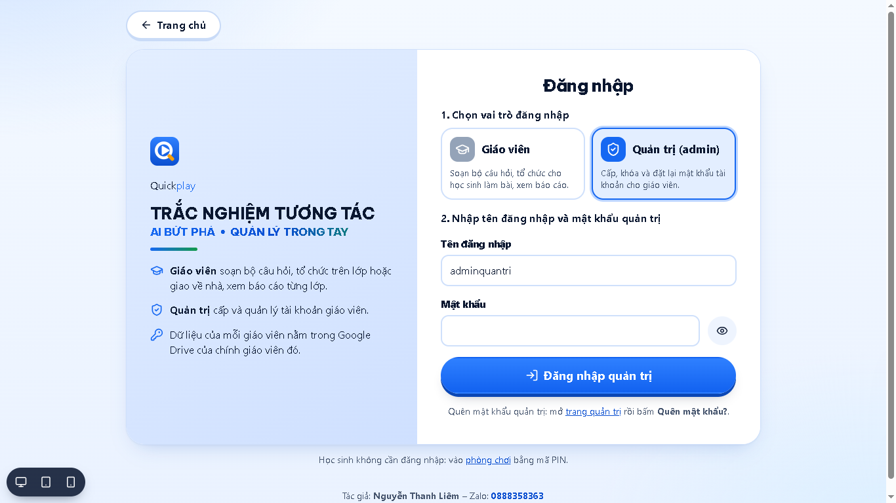
Màn đăng nhập quản trị (chọn vai trò Quản trị ở bước 2).
Trình duyệt giữ phiên đăng nhập cho tới khi bấm Đăng xuất. Máy chủ tài khoản bản 1.5.0 trở lên giữ phiên tối đa 30 ngày.
6. Cài máy chủ tài khoản (làm một lần)
Máy chủ tài khoản là một dự án Apps Script thuộc tài khoản Google của quản trị. Nó chỉ làm một việc: cấp, khóa và kiểm tra tài khoản giáo viên. Nó không lưu bộ câu hỏi hay kết quả học sinh.
Mở trang /adminquantri của trang web. Trang có bảng hướng dẫn 6 bước tự đánh dấu bước đã xong.
Làm theo Trình cài đặt Apps Script 5 bước: dán link thư mục Google Drive lưu trữ, sao chép mã đã điền sẵn khóa quản trị, dán mã vào dự án Apps Script mới, triển khai thành Ứng dụng web (Thực thi với tư cách: Tôi; Ai có quyền truy cập: Bất kỳ ai), rồi dán link kết thúc bằng /exec.
Bấm Kiểm tra. Trình cài đặt kiểm bốn điều kiện: đúng dạng link, máy chủ trả lời, phiên bản mã, quyền quản trị và thư mục Google Drive. Điều kiện nào lỗi thì dừng và ghi rõ lý do.
Khi liên kết xong, trang hiện phiên bản máy chủ, thời gian liên kết và nút Tải tệp kết nối (.json). Tệp này chỉ có link máy chủ và thư mục, không có khóa hay mật khẩu.
Đặt mật khẩu quản trị riêng (8–72 ký tự). Mật khẩu này không nằm trong mã nguồn.
Lưu ý: nên dùng tài khoản Gmail cá nhân. Tài khoản Google Workspace của trường thường bị chặn tùy chọn "Bất kỳ ai", khiến học sinh không vào được phòng.
Đăng nhập quản trị ở máy tính khác
Trang chủ → Dành cho giáo viên → vai trò Quản trị → Đã cài ở máy khác? Nạp tệp kết nối (.json) → chọn tệp → nhập tên đăng nhập và mật khẩu quản trị. Không cần dán lại link thư mục và link Apps Script.
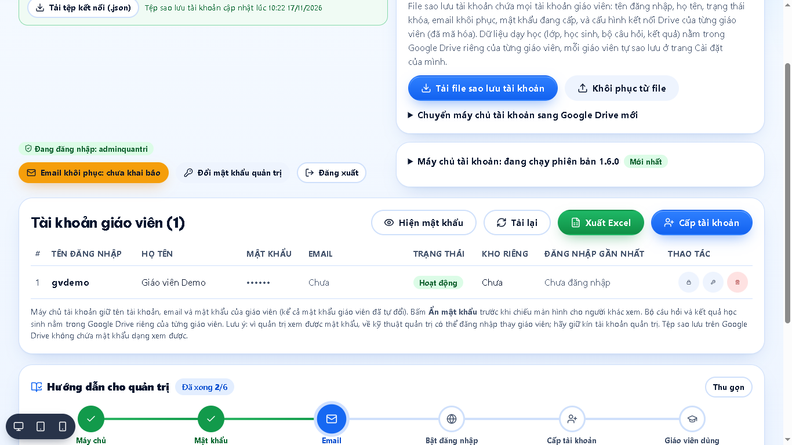
Trang quản trị sau khi đăng nhập: thư mục lưu trữ, sao lưu tài khoản, email khôi phục, đổi mật khẩu, đăng xuất.
7. Cấp, khóa, đặt lại mật khẩu, xóa tài khoản giáo viên
7.1 Cấp tài khoản mới
1
Ở trang quản trị, bấm Cấp tài khoản.
2
Nhập tên tài khoản (3–32 ký tự, không dấu cách, không phân biệt hoa thường; dùng được số, chữ không dấu và các ký tự . _ - @ + ! # $ % & * = ? ~ ^), họ tên và mật khẩu ban đầu (từ 6 ký tự). Có thể bấm Tạo ngẫu nhiên.
3
Bấm Tạo tài khoản, rồi bấm Chép để gửi và gửi cho giáo viên qua Zalo. Mật khẩu ban đầu nên đổi ngay sau lần đăng nhập đầu.
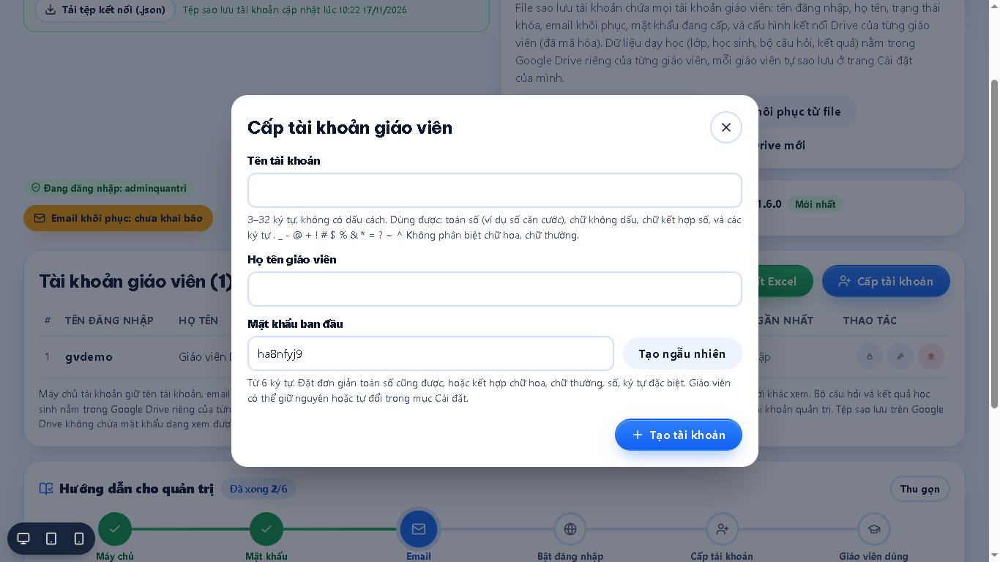
Hộp Cấp tài khoản giáo viên.
7.2 Bảng tài khoản và các nút thao tác
Nút / cột
Ý nghĩa
Ẩn mật khẩu / Hiện mật khẩu
Ẩn hoặc hiện cột mật khẩu. Bấm Ẩn mật khẩu trước khi chiếu màn hình cho người khác xem.
Tải lại · Xuất Excel
Làm mới danh sách và xuất danh sách tài khoản ra Excel.
Khóa (biểu tượng ổ khóa)
Khóa tài khoản: giáo viên bị đăng xuất ở mọi thiết bị. Bấm lại để mở khóa.
Đặt lại mật khẩu (biểu tượng chìa khóa)
Tạo mật khẩu mới cho giáo viên. Xem mục 11.
Xóa (thùng rác)
Xóa tài khoản khỏi máy chủ tài khoản. Dữ liệu trên Drive của giáo viên không bị xóa.
Cột Kho riêng
Cho biết giáo viên đã kết nối Google Drive của riêng mình hay chưa.
Cột Đăng nhập gần nhất
Thời điểm giáo viên đăng nhập lần cuối.
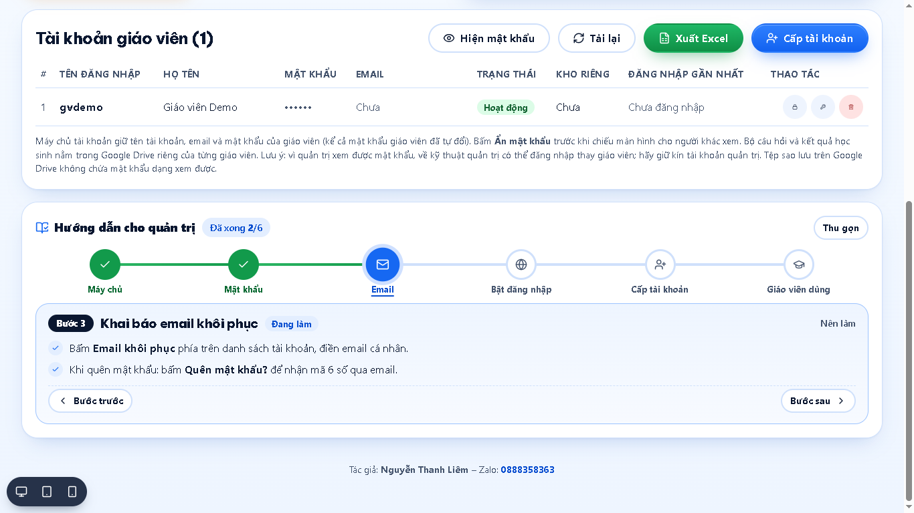
Danh sách tài khoản giáo viên với các nút khóa, đặt lại mật khẩu và xóa.
Hệ quả cần biết: quản trị xem được mật khẩu giáo viên ở cột Mật khẩu, nên về kỹ thuật có thể đăng nhập thay giáo viên. Hãy giữ kín tài khoản quản trị và nhắc giáo viên không dùng lại mật khẩu Gmail hay ngân hàng.
7.3 Hướng dẫn 6 bước trên trang quản trị
Khối Hướng dẫn cho quản trị ở cuối trang hiện mốc tiến độ: máy chủ, mật khẩu, email, bật đăng nhập, cấp tài khoản, và giáo viên bắt đầu dùng. Bước đang làm được đánh dấu, và các nút Bước trước / Bước sau xem từng bước. Trên điện thoại khối này được thu gọn; bấm Mở hướng dẫn để xem.
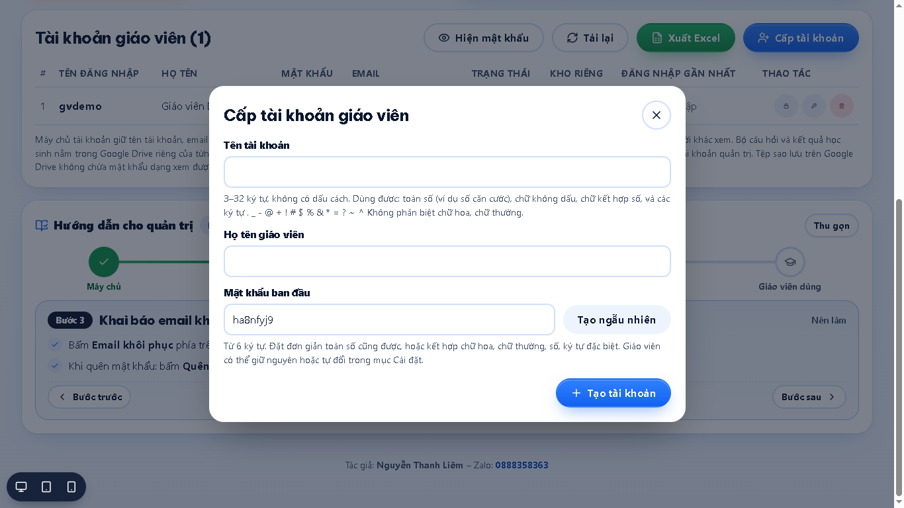
Hướng dẫn 6 bước cho quản trị.
8. Sao lưu và chuyển máy chủ tài khoản
Tải file sao lưu tài khoản: gồm tất cả tài khoản giáo viên, email, mật khẩu đang cấp và cấu hình kết nối đã mã hóa. Tệp có mật khẩu giáo viên nên cất ở nơi an toàn.
Khôi phục từ file: trên máy chủ mới, thêm các tài khoản chưa có. Tài khoản đã có chỉ được thay khi quản trị đồng ý.
Chuyển máy chủ tài khoản sang Google Drive mới: mở khối cùng tên, chọn thư mục mới và làm theo hướng dẫn trên màn hình.
Trang báo dung lượng Google Drive của máy chủ và cảnh báo khi thư mục lưu trữ đã đầy.
Máy chủ tài khoản lưu tên tài khoản, họ tên, email, trạng thái khóa, lần đăng nhập gần nhất, mật khẩu của giáo viên (quản trị xem được) và két cấu hình đã mã hóa bằng mật khẩu giáo viên. Máy chủ không lưu bộ câu hỏi hay kết quả học sinh.
Phần 3 · Giáo viên
9. Đăng nhập lần đầu và kết nối Google Drive
Đây là việc làm một lần duy nhất, khoảng 10–15 phút. Sau đó, đăng nhập ở máy nào phần mềm cũng tự kết nối lại Google Drive của thầy cô.
1
Mở trang chủ, bấm Dành cho giáo viên, chọn vai trò Giáo viên, nhập tên đăng nhập và mật khẩu do quản trị cấp. Bấm Đăng nhập.
2
Trang Cài đặt tự mở. Tạo một thư mục riêng trên Google Drive (ví dụ Quickplay_DuLieu), mở thư mục rồi sao chép link trên thanh địa chỉ.
3
Làm lần lượt 5 bước của Trình cài đặt Apps Script (xem bảng dưới). Bước cuối phần mềm tự kiểm tra.
4
Đổi mật khẩu được cấp nếu muốn (mục 11), và khai báo email khôi phục.
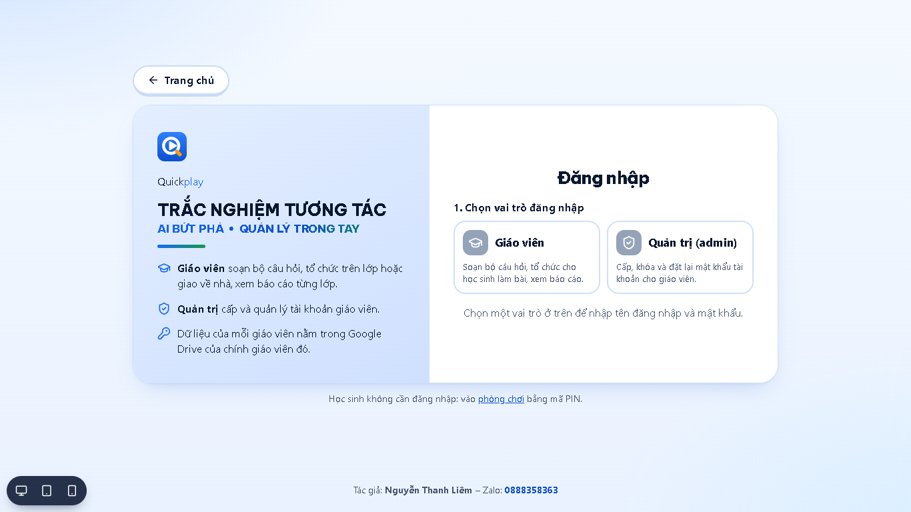
Màn đăng nhập giáo viên: chọn vai trò Giáo viên, nhập tên đăng nhập và mật khẩu do quản trị cấp.Lần đầu đăng nhập: trang Cài đặt tự mở, báo chưa kết nối Google Drive và hướng dẫn làm 5 bước.
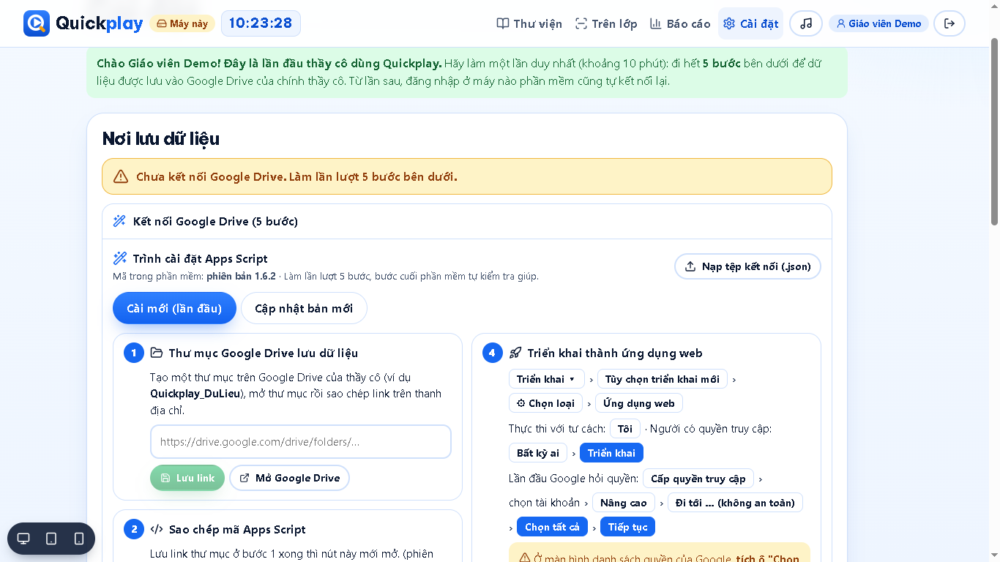
Trình cài đặt Apps Script: mở mục 5 bước để làm lần lượt (dán link thư mục, sao chép mã, dán mã, triển khai, kiểm tra).
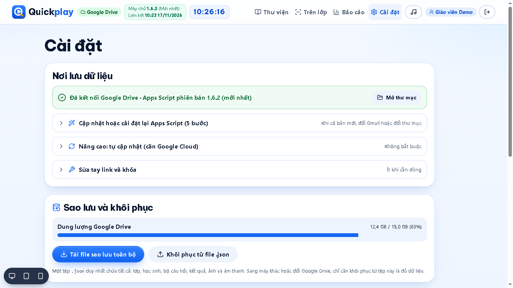
Trang Cài đặt → Nơi lưu dữ liệu: khối trạng thái, cập nhật Apps Script, nâng cao và sao lưu.
Bước
Việc cần làm
Chi tiết
1
Dán link thư mục Drive
Dán link thư mục đã sao chép, bấm lưu.
2
Sao chép mã
Bấm Sao chép mã. Mã đã điền sẵn thư mục và khóa giáo viên, không cần chạy hàm setup().
Triển khai → Tùy chọn triển khai mới → Ứng dụng web. Thực thi với tư cách Tôi; quyền truy cập Bất kỳ ai. Cấp quyền khi Google hỏi.
5
Dán link và kiểm tra
Dán link kết thúc bằng /exec, bấm Kiểm tra. Các điều kiện được đánh tích xanh từng dòng.
Ở máy tính khác, bấm Nạp tệp kết nối (.json) ở đầu Trình cài đặt để nối lại ngay. Tệp này có khóa giáo viên, hãy giữ kín. Nếu đã đăng nhập bằng tài khoản được cấp thì phần mềm tự nhớ kết nối, tệp này chỉ là cách dự phòng.
Nên dùng Gmail cá nhân. Nếu học sinh báo bị đòi đăng nhập Google khi mở link, nguyên nhân thường là bản triển khai chưa đặt quyền Bất kỳ ai.
10. Thư mục Google Drive riêng của giáo viên
Thư mục được tạo ở Google Drive của chính giáo viên. Phần mềm tự tạo bên trong thư mục QUICKPLAY_DATA gồm các khu quizzes (bộ đề), sessions (kết quả buổi học) và media (ảnh, âm thanh).
Muốn đổi thư mục: vào Cài đặt → Nơi lưu dữ liệu → Cập nhật hoặc cài đặt lại Apps Script (5 bước), dán link thư mục mới. Dữ liệu cũ vẫn nằm trong thư mục cũ.
Không sửa tay các tệp trong QUICKPLAY_DATA khi đang có buổi học. Tên tệp bộ đề có dạng Khối lớp - Môn - Tên bộ đề (mã).json; đừng xóa phần mã ở cuối tên.
Xóa nhầm bộ đề: tệp chuyển vào Thùng rác Google Drive và khôi phục được trong 30 ngày.
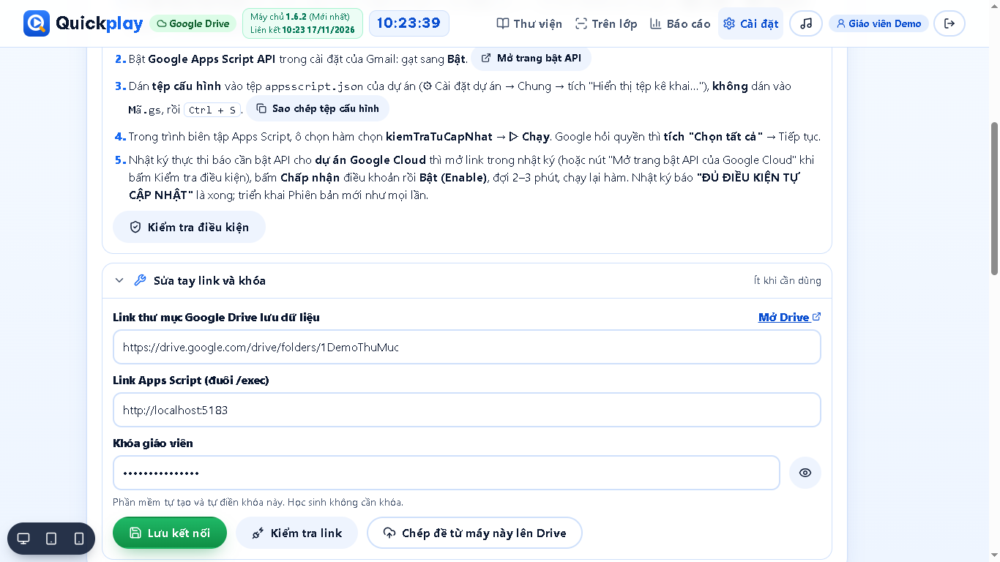
Mục Sửa tay link và khóa: dùng khi cần đổi thư mục hoặc khóa giáo viên thủ công.
11. Email khôi phục và quên mật khẩu
11.1 Khai báo email khôi phục (nên làm ngay)
1
Vào Cài đặt → Tài khoản (tên tài khoản của bạn). Mở mục Email khôi phục.
2
Điền email cá nhân, lưu lại. Nút Email khôi phục cũng xuất hiện ở đầu khu tài khoản của trang quản trị.
11.2 Khi quên mật khẩu
Đã khai báo email: ở màn đăng nhập, bấm Quên mật khẩu?. Phần mềm gửi mã 6 số tới email (hiệu lực 15 phút). Nhập mã và đặt mật khẩu mới. Sai quá 5 lần phải xin mã mới.
Chưa khai báo email: nhờ quản trị bấm Đặt lại mật khẩu ở trang quản trị rồi gửi mật khẩu mới.
Sau khi đặt lại, két cấu hình cũ không mở được. Đăng nhập lại và kết nối lại Google Drive một lần; dữ liệu trên Drive không mất.
11.3 Đổi mật khẩu khi đang đăng nhập
Vào Cài đặt → Tài khoản → Đổi mật khẩu. Có thể giữ nguyên mật khẩu được cấp. Khi đổi mật khẩu bắt buộc phải có email; mật khẩu mới được gửi về email và được lưu ở máy chủ tài khoản để quản trị xem lại khi cần.
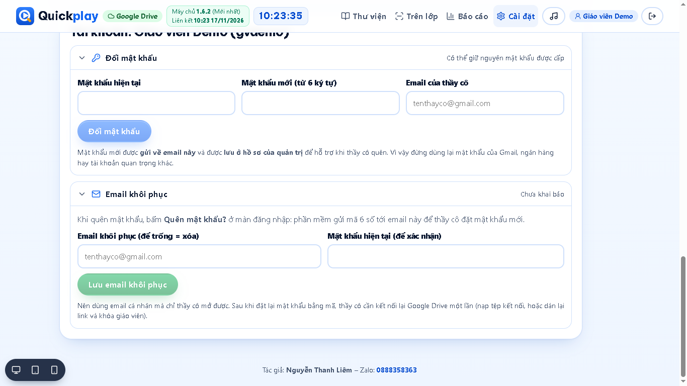
Cài đặt → Tài khoản: mục Đổi mật khẩu và Email khôi phục (mở bằng cách bấm tiêu đề mục).
Tên tài khoản và mật khẩu của giáo viên: tên đăng nhập 3–32 ký tự; mật khẩu từ 6 ký tự, đặt thế nào cũng được (số, chữ, ký tự đặc biệt).
12. Cập nhật phiên bản mới
Có hai phần cần cập nhật, và chúng khác nhau.
12.1 Giao diện Quickplay trên trình duyệt
Tự động. Khi đưa phiên bản mới lên, trình duyệt tải bản mới khi thầy cô mở lại trang. Nếu thấy giao diện cũ, tải lại trang bằng Ctrl + F5.
12.2 Apps Script của từng giáo viên (máy chủ lưu dữ liệu)
Khi có bản Apps Script mới, đầu trang giáo viên hiện lời nhắc màu vàng. Cách thông thường là 5 bước cập nhật tay (mất khoảng 3 phút, link, khóa và dữ liệu giữ nguyên):
Vào Cài đặt → Nơi lưu dữ liệu → Cập nhật hoặc cài đặt lại Apps Script (5 bước). Sao chép mã mới.
Mở dự án Apps Script đang dùng, dán đè vào tệp Mã.gs, lưu. Không phải sửa tệp nào khác.
Bấm Triển khai → Quản lý các bản triển khai, chọn bản đang dùng, bấm biểu tượng bút chì, chọn Phiên bản mới, rồi Triển khai.
Quay lại Cài đặt, dán lại link (nếu được hỏi) và bấm Kiểm tra.
Không dùng Tùy chọn triển khai mới khi cập nhật: cách đó tạo ra link khác và thầy cô phải dán lại link vào phần mềm. Nếu chỉ lưu mã mà không tạo "Phiên bản mới", phần mềm vẫn chạy mã cũ.
12.3 Tự cập nhật (tùy chọn nâng cao)
Trong Cài đặt có mục gập Nâng cao: tự cập nhật (cần Google Cloud), ghi là không bắt buộc. Khi đã thiết lập xong, Apps Script tự cập nhật lúc thầy cô mở trang giáo viên. Việc thiết lập gồm: bật xác thực hai bước cho Gmail, bật Google Apps Script API, dán tệp appsscript.json của dự án, chạy hàm kiemTraTuCapNhat và cấp quyền. Nút Kiểm tra điều kiện hiện lý do nếu chưa đạt. Phần mềm không tự cập nhật khi đang có buổi học trực tiếp.
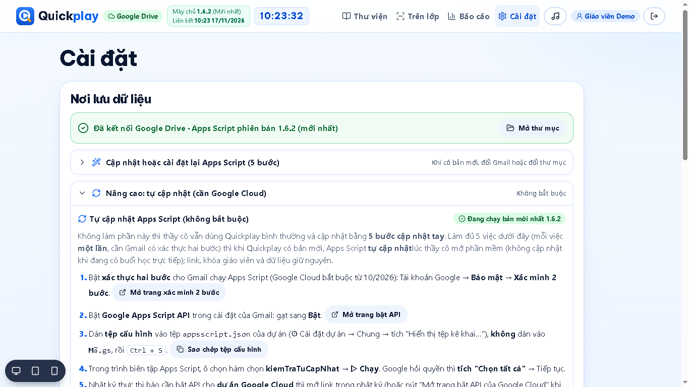
Mục Nâng cao: tự cập nhật (cần Google Cloud), mở ra để xem các bước và nút Kiểm tra điều kiện.
13. Giao diện trên máy tính, máy tính bảng, điện thoại
Giáo viên truy cập và điều khiển được trên cả ba thiết bị. Bố cục tự đổi theo khổ màn hình:
Khu vực
Máy tính
Máy tính bảng và điện thoại
Thanh trên cùng
Logo, trạng thái Google Drive, phiên bản máy chủ, đồng hồ, các mục Thư viện · Trên lớp · Báo cáo · Cài đặt, nút Đăng xuất
Các mục thu gọn; đồng hồ và trạng thái vẫn hiện
Thư viện đề
Cột bên trái là cây Khối lớp → Môn → Chương → Bài; lưới bộ đề bên phải
Cây thu gọn, bộ đề xếp thành danh sách một cột
Trình soạn câu hỏi
Đầy đủ các thanh công cụ và xem trước câu hỏi
Xếp một cột, cuộn dọc; nên soạn đề trên máy tính hoặc máy tính bảng
Phòng điều khiển
Đủ bốn thẻ: Bảng điều khiển, Thống kê, Giám sát gian lận, Bảng xếp hạng
Xếp dọc; giáo viên vẫn bấm Bắt đầu, Câu tiếp theo, Tạm dừng, Kết thúc
Học sinh
Chơi được đầy đủ
Chơi là chính: câu hỏi và đáp án lớn, dễ bấm
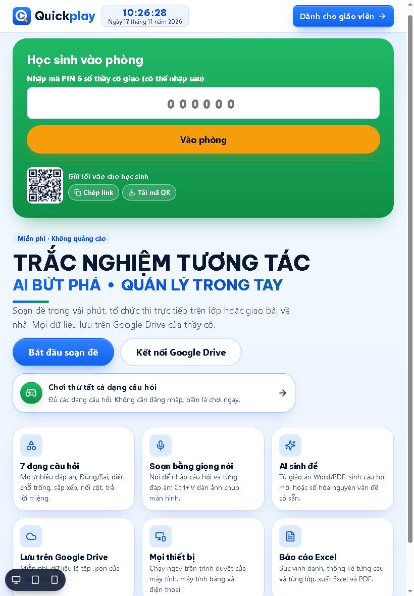
Trang chủ trên máy tính bảng (khoảng 820 px).
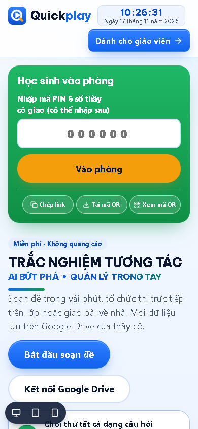
Trang chủ trên điện thoại (khoảng 390 px).
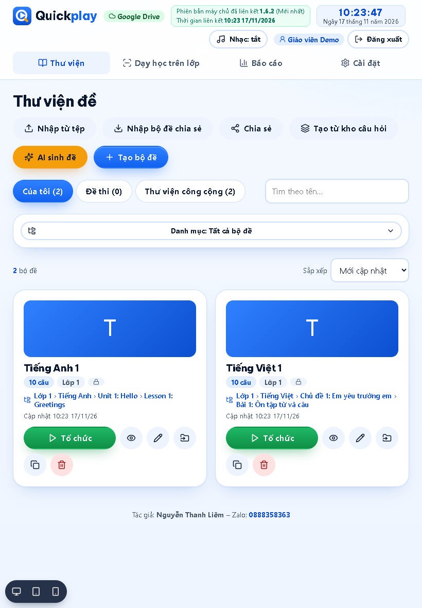
Thư viện trên máy tính bảng: cây Khối lớp bên trái thu gọn, lưới bộ đề một đến hai cột.
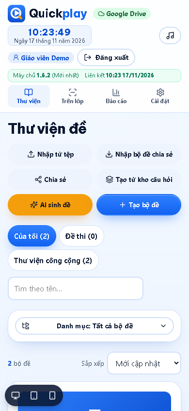
Thư viện trên điện thoại: bộ đề xếp thành danh sách, các nút chức năng ở dưới từng thẻ.
Để xem thử giao diện trên các khổ màn hình, dùng nút biểu tượng máy tính / máy tính bảng / điện thoại ở góc dưới bên trái của trang.
14. Thư viện đề: tạo, nhập, sắp xếp bộ đề
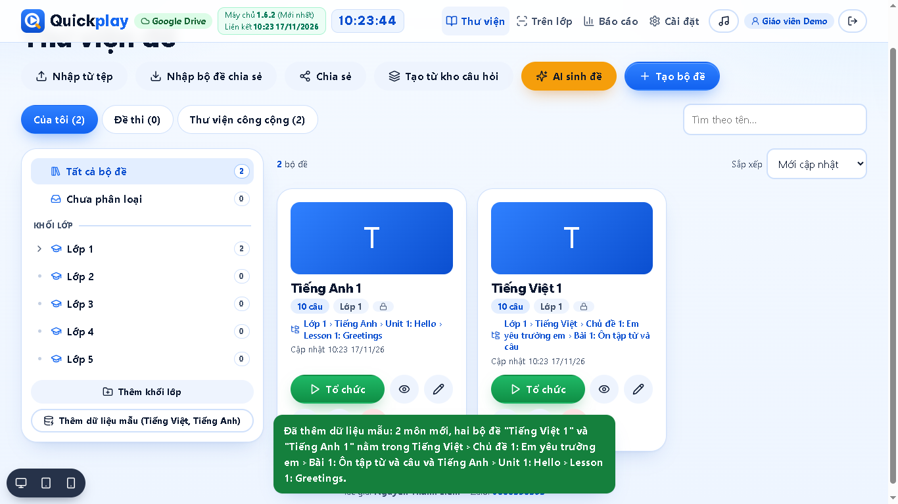
Thư viện đề: các nút đầu trang, tab Của tôi / Đề thi / Thư viện công cộng, cây Khối lớp, lưới bộ đề.
14.1 Các nút đầu trang
Nút
Chức năng
Nhập từ tệp
Nhập bộ đề từ Word, PDF, PowerPoint, Excel, CSV hoặc Google Form. Có thể tải mẫu Word chuẩn ngay trong hộp này.
Nhập bộ đề chia sẻ
Nhập tệp .json do giáo viên khác chia sẻ. Xem mục 16.
Chia sẻ
Chọn bộ đề và câu hỏi để xuất tệp chia sẻ. Xem mục 16.
Tạo từ kho câu hỏi
Ghép câu hỏi từ nhiều bộ đề có sẵn thành một bộ đề mới.
AI sinh đề
Tạo câu hỏi từ giáo án Word/PDF bằng AI (cần khóa Gemini trong Cài đặt).
Tạo bộ đề
Tạo bộ đề trống và mở trình soạn.
14.2 Tab và cây bên trái
Của tôi: các bộ đề bạn soạn. Đề thi: các đề có thời điểm kiểm tra và mã đề (riêng tư). Thư viện công cộng: bộ đề công khai, gồm hai bộ mẫu Tiếng Việt 1 và Tiếng Anh 1.
Cây Khối lớp → Môn → Chương/Chủ đề → Bài dùng để xếp và tìm bộ đề. Bấm Thêm khối lớp để thêm lớp; mỗi môn ghi tên lớp của mình.
Ô Tìm bộ đề, ô sắp xếp (Mới cập nhật / Theo tên / Nhiều câu nhất) và các nút trên từng thẻ: Tổ chức, Chơi thử, Sửa, Chuyển tới môn, chương, bài khác, Nhân bản, Xóa.
Nút Thêm dữ liệu mẫu (Tiếng Việt, Tiếng Anh) tạo hai môn mẫu kèm bộ đề đủ mọi dạng câu hỏi, dùng để làm quen.
15. Trình soạn câu hỏi và các dạng câu hỏi
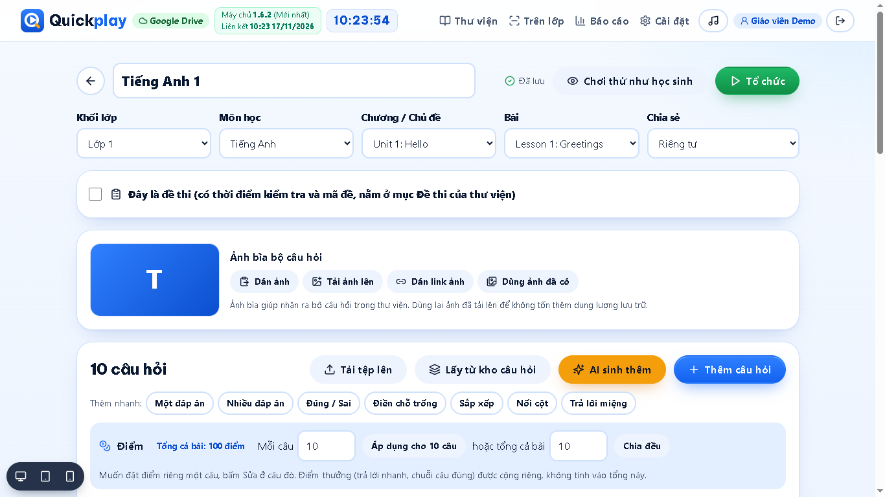
Trình soạn bộ đề: tiêu đề, môn, chương, bài, ảnh bìa, điểm, thời gian và danh sách câu hỏi.
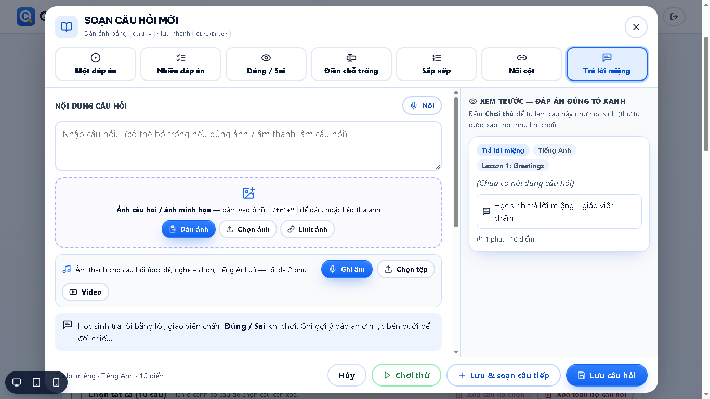
Hộp Soạn câu hỏi mới: chọn dạng câu hỏi ở hàng trên cùng, rồi nhập nội dung, đáp án và đáp án đúng.
15.1 Các việc trong trình soạn
Đặt tên bộ đề, môn, chương, bài (chọn từ danh mục), quyền chia sẻ (riêng tư hoặc công khai), và tích Đây là đề thi nếu dùng cho kì kiểm tra.
Đặt ảnh bìa: dán ảnh, tải ảnh lên, dán link ảnh hoặc dùng lại ảnh đã có.
Đặt điểm: điểm mỗi câu, hoặc tổng điểm cả bài chia đều. Đặt thời gian suy nghĩ cho tất cả câu hoặc riêng từng câu.
Nút Thêm câu hỏi và các nút thêm nhanh (Một đáp án, Nhiều đáp án, Đúng/Sai, Điền chỗ trống, Sắp xếp, Nối cột, Trả lời miệng).
Trên từng câu: Sửa, chuyển lên / xuống, Nhân bản, Chuyển sang bộ đề khác (có thể khác môn hoặc chủ đề), Xóa. Tích nhiều câu để xóa cùng lúc.
Nút Chơi thử như học sinh: xem đúng những gì học sinh sẽ thấy, không tính giờ, không lưu kết quả.
15.2 Các dạng câu hỏi
Dạng
Cách học sinh trả lời
Chấm như thế nào
Một đáp án
Chọn một phương án
Đúng hoặc sai
Nhiều đáp án
Chọn tất cả phương án đúng, rồi bấm Gửi đáp án
Đúng hết, hoặc theo điểm từng phần nếu đặt như vậy
Đúng / Sai
Chọn Đúng hoặc Sai
Đúng hoặc sai
Điền chỗ trống – gõ chữ
Gõ đáp án vào ô
So khớp đáp án
Điền chỗ trống – chọn từ kho từ (kéo thả)
Bấm từ trong kho để điền vào chỗ trống; bấm lại ô để bỏ
Từ đúng ở đúng chỗ
Điền chỗ trống – chọn từ menu
Chọn từ trong danh sách thả xuống tại chỗ trống
Từ đúng ở đúng chỗ
Sắp xếp
Bấm lần lượt các cụm từ theo thứ tự đúng, rồi Xác nhận
Đúng thứ tự
Nối cột
Bấm một mục cột A, rồi mục cột B cần nối; bấm lại để bỏ
Phần Đáp án / lời giải của giáo viên hiện sau khi học sinh trả lời. Ô này nhập được bằng giọng nói (biểu tượng micro).
16. Chia sẻ bộ đề và câu hỏi cho giáo viên khác
Phần mềm không cho giáo viên xem nội dung của nhau. Khi cần chia sẻ, giáo viên xuất một tệp .json chỉ chứa những nội dung mình chọn, gửi tệp cho giáo viên khác, và người nhận nhập tệp vào lớp và môn của mình.
16.1 Xuất tệp chia sẻ
1
Ở thư viện, bấm Chia sẻ.
2
Chọn nguồn:Bộ câu hỏi của tôi hoặc Đề thi.
3
Lọc theo lớp và môn để danh sách gọn lại, rồi tích các bài muốn chia sẻ. Có thể bấm Chọn tất cả … bài đang hiện.
4
Muốn chỉ gửi một số câu: bấm Chọn câu ở bài đó và tích riêng từng câu.
5
Đặt tên tệp chia sẻ (ghi trong tệp), chọn có kèm ảnh và âm thanh hay không, rồi bấm Xuất tệp chia sẻ. Tệp tải về có tên quickplay-chia-se_.json.
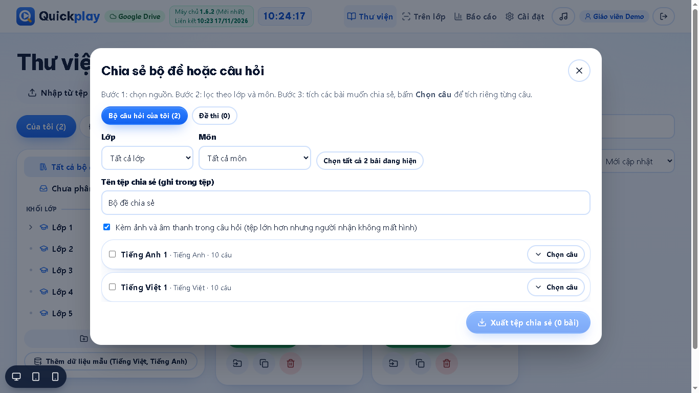
Hộp Chia sẻ: chọn nguồn, lọc theo lớp và môn, tích bài, chọn câu.
Tệp chia sẻ không chứa mã id, người sở hữu, mật khẩu hay kết quả học sinh. Chỉ gửi tệp cho người được phép dùng.
16.2 Nhập tệp chia sẻ
1
Ở thư viện, bấm Nhập bộ đề chia sẻ, chọn tệp .json. Hộp hiện tên bộ đề, số câu và đường dẫn đích của từng bài.
2
Chọn cách đặt vào tài khoản:
Tự động theo tệp: phần mềm tạo lớp, môn, chương, bài còn thiếu đúng như trong tệp (ví dụ môn Tiếng Anh, chủ đề 1, bài 1).
Chọn vị trí: chọn lớp, môn, chương và bài cho tất cả bài trong tệp. Các ô có gợi ý từ danh mục của bạn; gõ tên mới thì tạo mới.
3
Bấm Nhập N bài. Ảnh và âm thanh trong tệp được tải lên tài khoản của bạn, và mọi link trong câu hỏi được đổi theo.
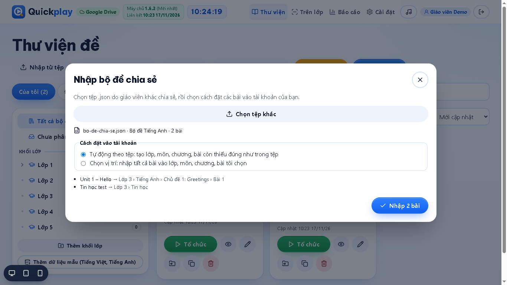
Nhập bộ đề chia sẻ, chế độ Tự động theo tệp: danh sách hiện đường dẫn đích của từng bài.
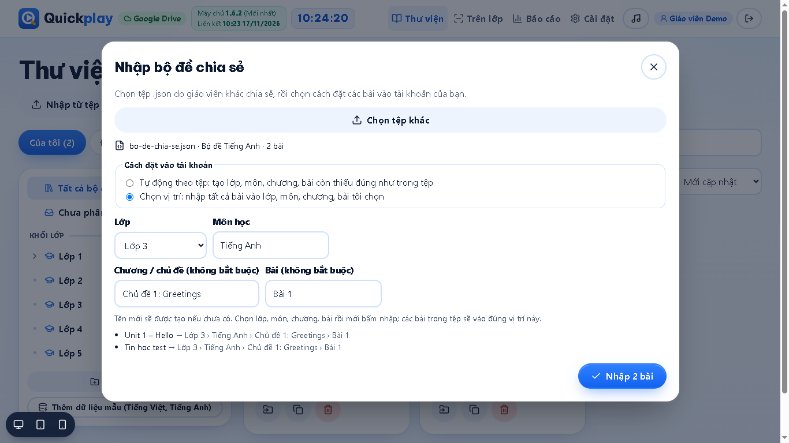
Chế độ Chọn vị trí: chọn lớp, môn, chương và bài; áp dụng cho mọi bài trong tệp.
16.3 Chuyển câu hỏi và bộ đề sau khi nhập
Chuyển một câu sang bộ đề khác: trong trình soạn, bấm biểu tượng Chuyển câu … sang bộ đề khác ở câu đó, chọn bộ đề đích (nhóm theo môn). Câu được thêm vào cuối bộ đích, rồi bỏ khỏi bộ đang soạn. Nhãn môn và bài của câu được cập nhật theo bộ đích.
Chuyển cả bộ đề sang môn, chương, bài khác: trên thẻ bộ đề, bấm Chuyển … tới môn, chương, bài khác, chọn lớp, môn, chương, bài rồi bấm Chuyển tới đây.
Sau khi chuyển, mọi câu trong bộ đề mang nhãn đúng vị trí mới, nên không còn lẫn môn cũ khi xem và khi chia sẻ tiếp.
17. Lớp học, mã số học sinh và kho đề thi
17.1 Lớp học và mã số học sinh
Vào Trên lớp → Lớp học, bấm Thêm lớp, dán danh sách học sinh (mỗi dòng một tên).
Bấm Mã học sinh của lớp để đặt mã số: gõ từng mã, hoặc điền chữ đứng đầu (ví dụ HS) và số bắt đầu rồi bấm Tạo mã tự động (HS1, HS2…), hoặc Dán mã có sẵn từ Excel.
Mã dài tối đa 32 ký tự, không phân biệt hoa thường. Bấm Lưu mã, rồi Xuất Excel để in hoặc gửi danh sách.
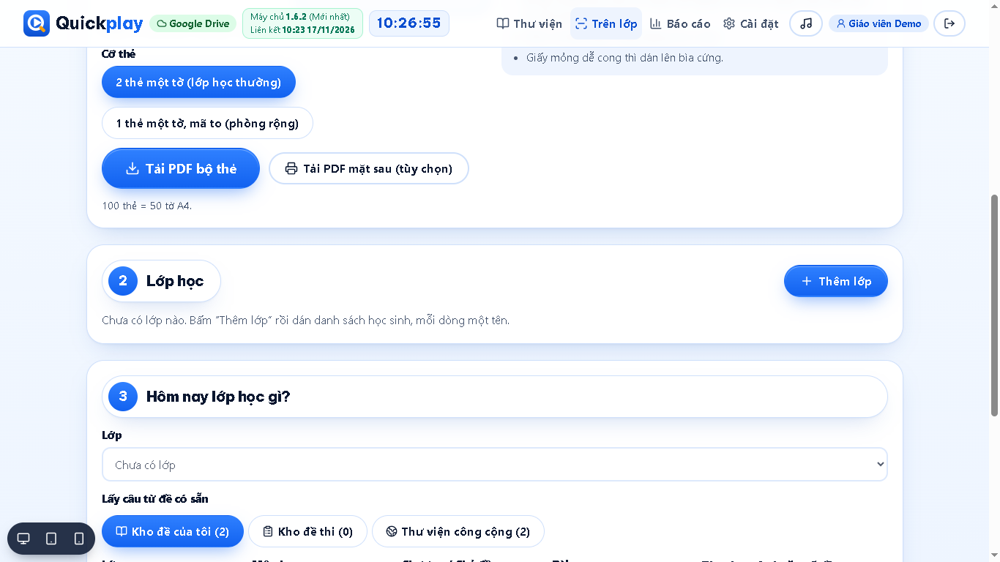
Trên lớp → Lớp học: danh sách lớp, nút Thêm lớp và Mã học sinh của từng lớp.
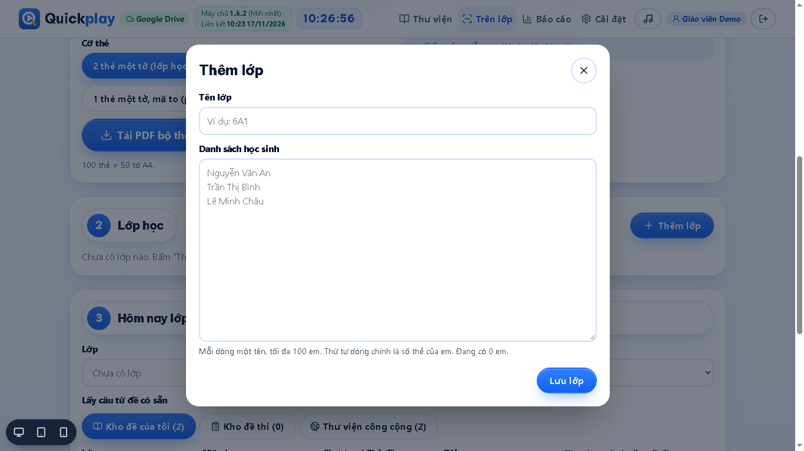
Hộp Thêm lớp: đặt tên lớp và dán danh sách học sinh, mỗi dòng một tên.
17.2 Đề thi và thi nhiều đề
Ra đề: Thư viện → thẻ Đề thi → Tạo đề thi từ ngân hàng câu hỏi. Chọn khối lớp, môn, thời điểm kiểm tra (thường xuyên, giữa kì I, cuối kì I, giữa kì II, cuối kì II). Mã đề tự gợi ý (ví dụ TIN3-CK1-01) và sửa được. Đề thi luôn để riêng tư.
Nhiều đề cho một kì: trong nhóm kì kiểm tra bấm Thêm đề; mã đề tự tăng. Các đề cùng kì nên có cùng số câu.
Tổ chức thi: tích các đề → Tổ chức thi → chọn Bốc ngẫu nhiên 1 đề, Bốc ngẫu nhiên 2 đề hoặc Dùng cả các đề. Đề được bốc lúc bấm Mở phòng kiểm tra. Mỗi em được giao đề đang có ít bạn nhất.
Màn hình làm bài và màn kết quả của học sinh hiện mã đề; bảng điểm Excel có cột Mã đề.
18. Tổ chức buổi học: năm cách làm
Bấm Tổ chức trên thẻ bộ đề, rồi chọn một trong các cách sau.
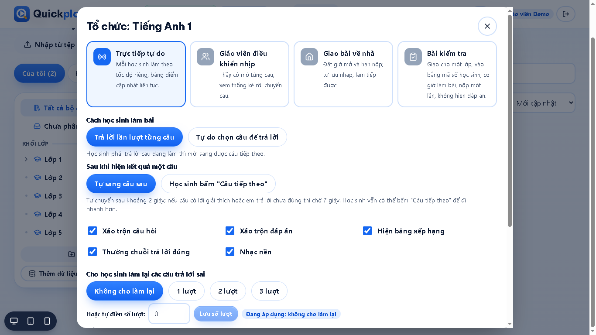
Hộp Tổ chức: chọn cách làm và các tùy chọn của buổi học.
Cách
Dùng khi
Học sinh cần
Trực tiếp tự do
Mỗi em tự làm theo tốc độ của mình trong giờ học; bảng điểm cập nhật liên tục
Điện thoại hoặc máy tính
Giáo viên điều khiển nhịp
Cả lớp làm cùng một câu; thầy cô mở từng câu, xem thống kê rồi chuyển câu
Điện thoại hoặc máy tính
Giao bài về nhà
Đặt giờ mở và hạn nộp; học sinh tự lưu nháp và làm tiếp được
Điện thoại hoặc máy tính
Bài kiểm tra
Giao cho một lớp, vào bằng mã số học sinh, có giờ làm bài, nộp một lần, không hiện đáp án
Điện thoại hoặc máy tính, và mã số
Thẻ trả lời (giấy)
Lớp không có thiết bị: em giơ thẻ A–D, thầy cô quét bằng điện thoại
Chỉ cần thẻ giấy đã in
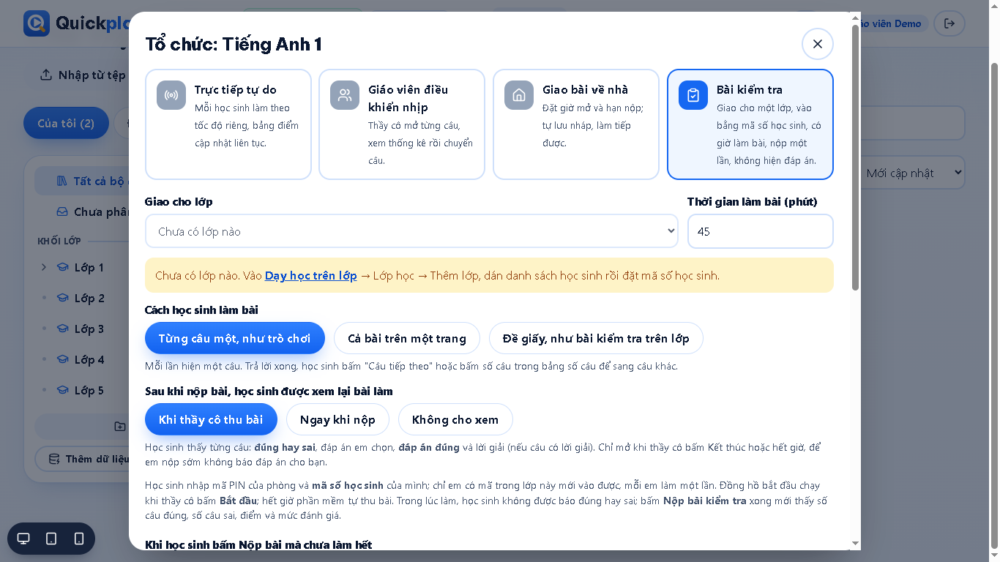
Tổ chức → Bài kiểm tra: chọn lớp, thời gian làm bài, kiểu làm bài và chế độ xem lại bài.
18.1 Các tùy chọn trong hộp Tổ chức
Trả lời lần lượt từng câu hoặc Tự do chọn câu (học sinh bấm số câu trong bảng để nhảy tới câu).
Tự sang câu sau hoặc học sinh bấm "Câu tiếp theo".
Số lượt làm lại câu sai: không làm lại, 1, 2 hoặc 3 lượt.
Xáo trộn câu hỏi, xáo trộn đáp án; Thưởng chuỗi trả lời đúng; Nhạc nền; Hiện bảng xếp hạng (3, 5, 10, 15 hoặc tất cả bạn).
Chống gian lận: yêu cầu toàn màn hình, số lần vi phạm cho phép trước khi khóa bài.
Với cách Bài kiểm tra: thời gian làm bài (phút), kiểu làm bài (từng câu một, cả bài trên một trang, hoặc đề giấy), và chế độ xem lại bài sau khi nộp (khi thầy cô thu bài, ngay khi nộp, hoặc không cho xem).
18.2 Trực tiếp tự do và bài về nhà: làm lại không giới hạn
Em vào lại với cùng tên bao nhiêu lần cũng được. Mỗi lần vào là một lượt mới (lần 1, lần 2…) có giờ vào riêng, nên kết quả các lượt trước không bị ghi đè. Bảng xếp hạng hiện lượt mới nhất; báo cáo và tệp Excel có đủ mọi lượt.
19. Phòng điều khiển của giáo viên
19.1 Mở phòng và mời học sinh
1
Chọn cách làm và bấm Mở phòng chờ. Phòng có mã PIN 6 số hiện ở đầu màn hình.
2
Học sinh vào bằng link (bấm Chép link tham gia), bằng mã PIN (vào trang học sinh rồi nhập mã), hoặc bằng mã QR.
3
Danh sách học sinh đã vào hiện ở khung chờ, kèm lớp. Học sinh vào muộn dùng cùng link hoặc mã.
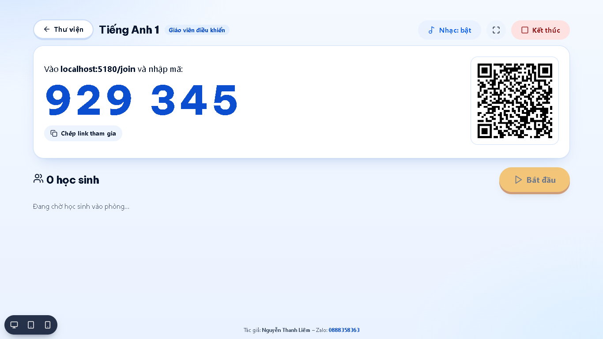
Phòng chờ: mã PIN, link, số học sinh đã vào và nút Bắt đầu.
19.2 Điều khiển buổi học
Nút
Chức năng
Bắt đầu
Mở câu đầu tiên (có đếm ngược ngắn).
Câu tiếp theo
Chuyển sang câu sau (chế độ giáo viên điều khiển). Khi cả lớp đã trả lời xong, phần mềm tự khóa câu, không chờ hết giờ.
Chốt đáp án ngay
Khóa câu ngay, không chờ hết giờ.
Tạm dừng / Tiếp tục
Dừng đồng hồ của cả lớp; khi tiếp tục, mốc thời gian được bù đúng số giây đã dừng.
Nhạc: bật / tắt
Bật hoặc tắt nhạc nền của phòng.
Kết thúc
Đóng phòng, xem bục vinh danh và báo cáo; xuất PDF (A4 ngang) hoặc Excel chi tiết.
Màn giáo viên khi đang chiếu câu hỏi: số câu, bộ đếm thời gian, số học sinh đã trả lời.
19.3 Bốn thẻ theo dõi
Bảng điều khiển: câu hiện tại, số học sinh đã trả lời, đáp án đúng và thống kê từng phương án khi câu đã khóa.
Thống kê: tỉ lệ đúng từng câu và của cả lớp.
Giám sát gian lận: từng lần vi phạm (chuyển tab, rời toàn màn hình) và nút Mở khóa cho bài bị khóa.
Bảng xếp hạng: hạng, họ tên, lớp, điểm, số câu đúng, điểm thưởng và tổng điểm.
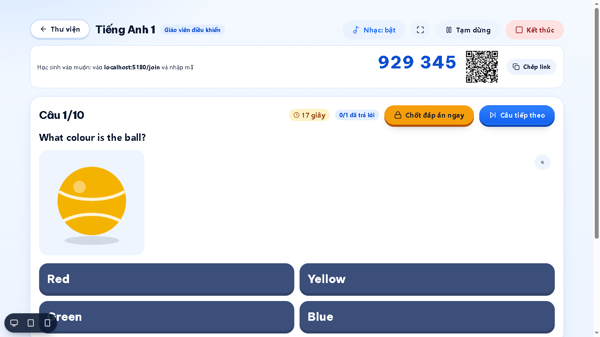
Kết quả câu: đáp án đúng, số em chọn từng phương án và bảng xếp hạng.
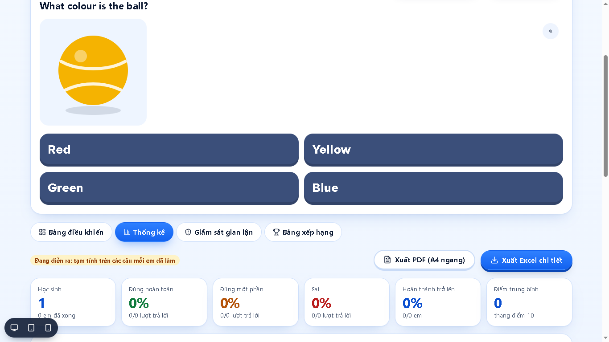
Thẻ Thống kê: tỉ lệ đúng từng câu và của cả lớp.
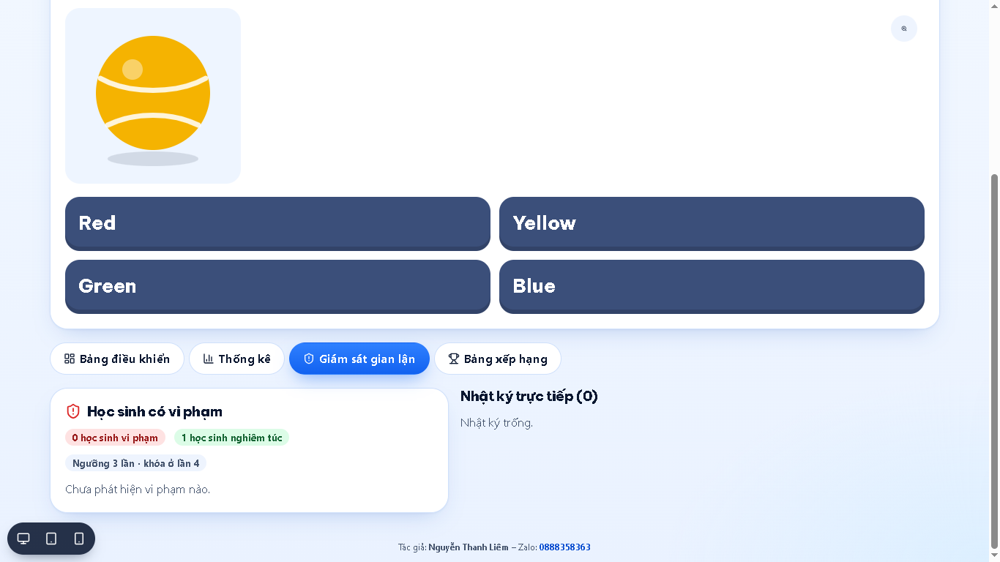
Thẻ Giám sát gian lận: từng lần vi phạm và nút Mở khóa cho bài bị khóa.
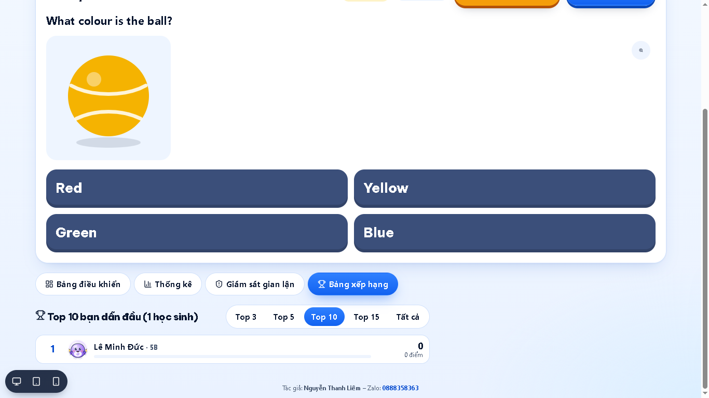
Thẻ Bảng xếp hạng: hạng, họ tên, lớp, điểm và tổng điểm.
Câu trả lời miệng: chấm ở thẻ Chấm trả lời miệng, từng em hoặc Tất cả đúng. Thầy cô nghe bản ghi âm và đọc chữ của em trước khi chấm.
20. Báo cáo, cài đặt, sao lưu
20.1 Báo cáo
Trang Báo cáo liệt kê các buổi đã tổ chức. Chọn một buổi để xem lại; xuất PDF hoặc Excel. Có thể chọn các buổi để xóa, hoặc xóa toàn bộ; tệp kết quả được chuyển vào thùng rác Google Drive và khôi phục được trong 30 ngày.
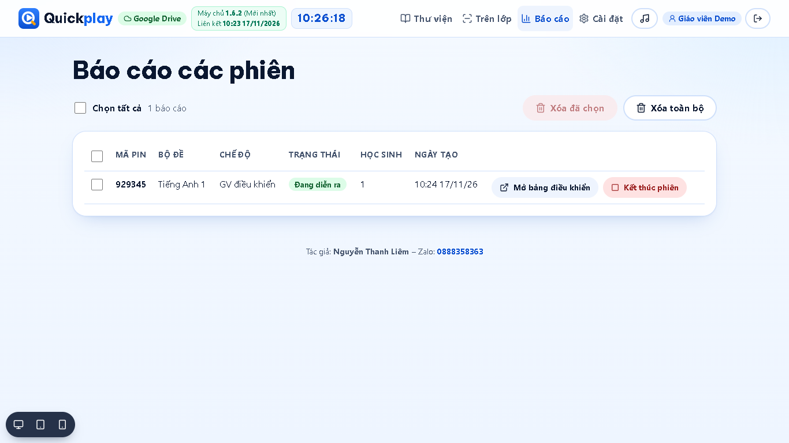
Trang Báo cáo.
20.2 Cài đặt
Mục
Nội dung
Nơi lưu dữ liệu
Trạng thái kết nối Google Drive, Cập nhật hoặc cài đặt lại Apps Script (5 bước), Nâng cao: tự cập nhật, Sửa tay link và khóa.
Sao lưu và khôi phục
Tải file sao lưu toàn bộ (một tệp .json gồm lớp, học sinh, bộ đề, kết quả, ảnh và âm thanh) và Khôi phục từ file .json. Thanh dung lượng Google Drive cảnh báo khi gần đầy.
Tài khoản
Đổi mật khẩu, email khôi phục (xem mục 11).
Trí tuệ nhân tạo
Dán khóa API Gemini miễn phí để dùng AI sinh đề. Khóa được lưu trong trình duyệt của thầy cô.
Cài đặt: Nơi lưu dữ liệu và Sao lưu.
Khi Google Drive đầy, phần mềm hiện cảnh báo đỏ ở mọi trang kèm nút Tải file sao lưu toàn bộ, vẫn dùng được khi Drive đã đầy. Từ 90% dung lượng trở lên, phần mềm nhắc trước.
21. Thẻ trả lời giấy
Chế độ này dùng khi lớp không có thiết bị: cả lớp trả lời bằng thẻ giấy, không em nào cần điện thoại. Giáo viên chỉ cần thẻ giấy đã in và một chiếc điện thoại để quét.
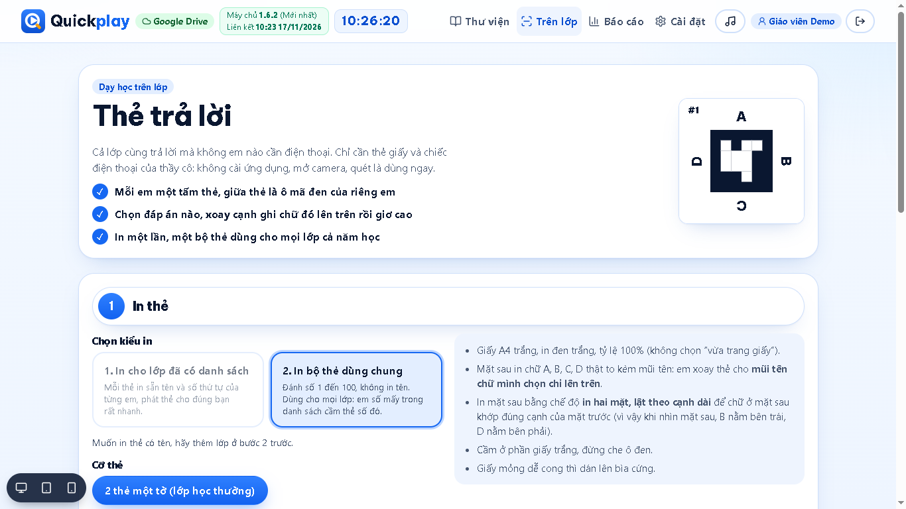
Trang Thẻ trả lời: in thẻ, cỡ thẻ, hướng dẫn in mặt sau.
21.1 In thẻ
In cho lớp đã có danh sách: mỗi thẻ in sẵn tên và số thứ tự của từng em, phát thẻ đúng bạn rất nhanh. Cần thêm lớp ở bước 2 trước.
In bộ thẻ dùng chung: đánh số 1 đến 100, không in tên. Dùng cho mọi lớp; em số mấy trong danh sách cầm thẻ số đó.
Chọn cỡ thẻ: 2 thẻ một tờ (lớp học thường) hoặc 1 thẻ một tờ, mã to (phòng rộng). Bấm Tải PDF bộ thẻ; tùy chọn Tải PDF mặt sau.
Giấy A4 trắng, in đen trắng, tỉ lệ 100% (không chọn "vừa trang giấy"). In mặt sau bằng chế độ in hai mặt, lật theo cạnh dài để chữ A, B, C, D khớp đúng.
21.2 Chơi bằng thẻ
Thầy cô đưa câu hỏi lên màn chiếu, học sinh đọc và chọn đáp án.
Học sinh giơ thẻ, xoay cạnh có chữ đáp án lên trên.
Thầy cô dùng điện thoại mở trang quét (/scan) và quét các thẻ; phần mềm đọc mã trên thẻ và ghi nhận đáp án cho từng em.
Kết quả hiện trên màn hình giáo viên và được lưu vào báo cáo như các buổi khác.
Mỗi em một tấm thẻ, giữa thẻ là ô mã đen riêng của em. Một bộ thẻ in một lần dùng cho mọi lớp trong cả năm học.
Phần 4 · Học sinh
22. Vào phòng bằng mã PIN, link hoặc mã QR
Học sinh không cần tài khoản. Có ba cách vào phòng: mở link thầy cô gửi, quét mã QR, hoặc vào trang phòng chơi rồi nhập mã PIN 6 số.
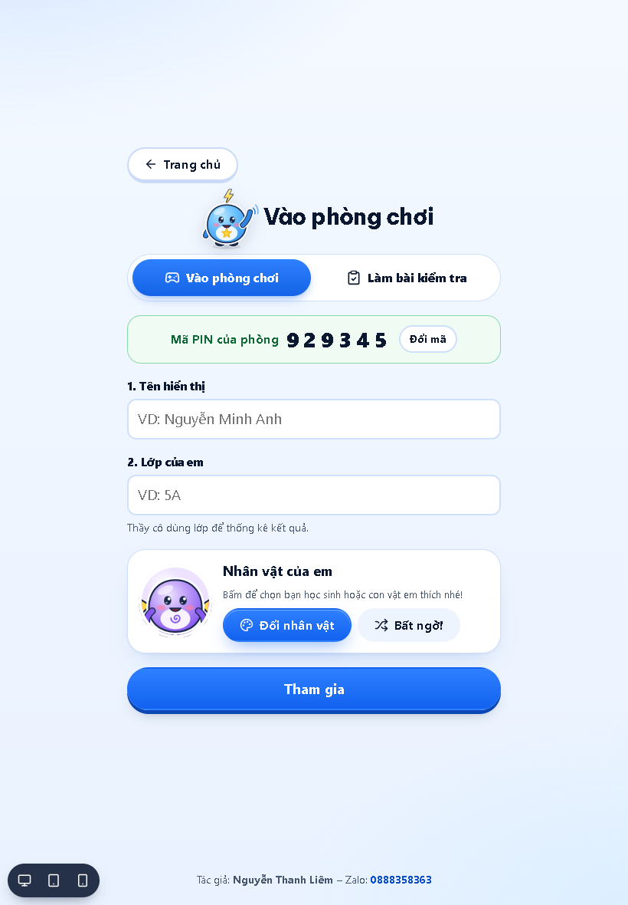
Trang vào phòng trên điện thoại: mã PIN đã điền sẵn từ link, tên, lớp và nhân vật.
22.1 Các ô trên trang vào phòng
Mục
Cách dùng
Vào phòng chơi / Làm bài kiểm tra
Chọn đúng loại phòng thầy cô tổ chức.
Mã PIN
6 chữ số thầy cô giao. Bấm Đổi mã để nhập mã khác.
Tên hiển thị
Tên của em (tối đa 24 ký tự). Nên dùng họ tên thật để thầy cô nhận ra.
Lớp
Lớp của em, ví dụ 5A.
Nhân vật của em
Bấm Đổi nhân vật để chọn hình đại diện, hoặc Bất ngờ! để chọn ngẫu nhiên.
Tham gia
Vào phòng chờ. Khi thầy cô bấm Bắt đầu, câu hỏi sẽ hiện ra.
Tiếp tục làm bài
Xuất hiện khi trình duyệt đã nhớ phiên của em. Bấm để làm tiếp đúng chỗ đang dở.
Vào với tên khác
Bỏ phiên cũ để vào bằng tên khác.
Nếu tên đã được dùng ở lượt làm trước, phần mềm hỏi lại: Đổi tên khác hoặc Vẫn dùng tên cũ. Hãy chọn đúng để kết quả đúng là của em.
23. Chơi trên điện thoại, máy tính bảng, máy tính
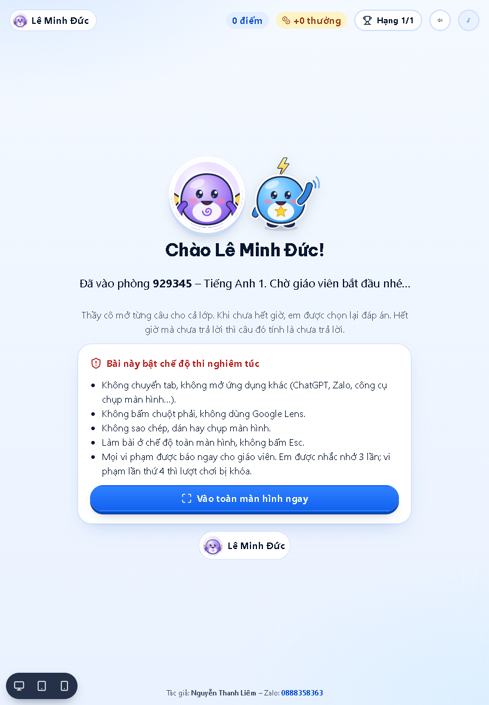
Học sinh trong phòng chờ, chờ thầy cô bấm Bắt đầu.Câu hỏi trên điện thoại: đồng hồ, điểm, hạng và bốn đáp án màu.
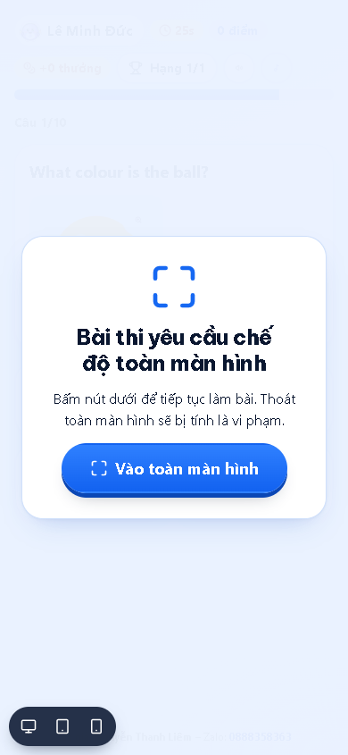
Sau khi chọn đáp án: "Đã ghi nhận đáp án của em", có thể chọn lại nếu còn giờ.
23.1 Trong câu hỏi
Chạm vào đáp án để chọn. Khi cần bấm Gửi đáp án (nhiều đáp án, sắp xếp, nối cột, điền chỗ trống). Với kéo thả, chạm từ rồi chạm chỗ trống.
Thanh trên cùng hiện tên, thời gian còn lại, điểm, điểm thưởng và hạng.
Sau khi trả lời, phần mềm báo Chính xác! hoặc Chưa đúng kèm giải thích của thầy cô, rồi chờ thầy cô chuyển câu (chế độ điều khiển) hoặc bấm Câu tiếp theo.
Khi hết giờ mà chưa chọn, phần mềm báo Hết giờ và không hiện đáp án đúng.
23.2 Ở chế độ làm bài theo kiểu tự do
Em có thể tự chọn câu để làm: bấm số câu trong bảng số câu để chuyển, làm xong bấm Nộp bài. Nếu thầy cô đặt Cả bài trên một trang, em cuộn xuống làm lần lượt và có thanh đếm số câu đã trả lời.
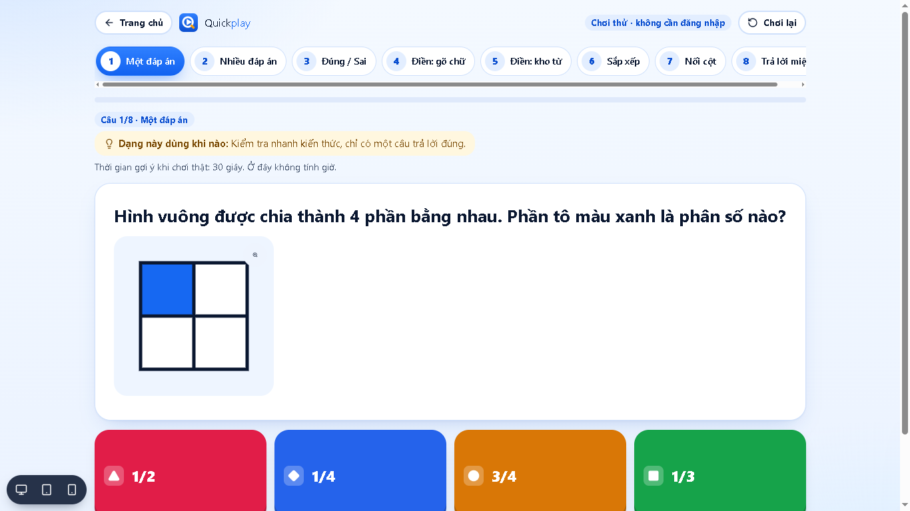
Chơi thử công khai (trang #/demo): xem các dạng câu hỏi mà không cần vào phòng.
Mất mạng: em cứ để nguyên trang. Phần mềm tự gửi lại câu trả lời khi có mạng. Nếu câu hỏi hoặc hình không hiện, bấm F5 (máy tính) hoặc nút Tải lại cạnh mã đề. Bài đã làm vẫn giữ nguyên và không bị tính vi phạm.
24. Làm bài kiểm tra bằng mã số học sinh
Mở link hoặc quét mã QR thầy cô gửi, chọn Làm bài kiểm tra.
Gõ mã số học sinh của em. Họ tên và lớp tự điền theo danh sách lớp để em kiểm tra, rồi bấm Tham gia. Chỉ mã có trong lớp mới vào được; mỗi mã làm một lần.
Thầy cô bấm Bắt đầu: đồng hồ chạy, hết giờ phần mềm tự thu bài.
Trong lúc làm, học sinh không được báo đúng hay sai. Nếu còn giờ và chưa nộp, em có thể bấm Chọn lại đáp án ở câu đã làm.
Làm xong bấm Nộp bài kiểm tra. Màn kết quả hiện số câu đúng, số câu sai, điểm thang 10 và mức đánh giá. Đã nộp thì không làm lại được.
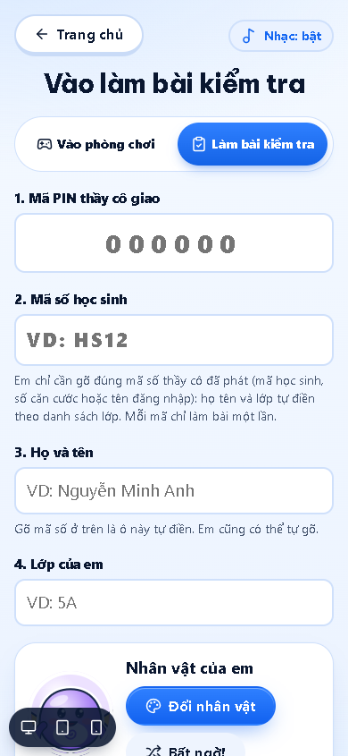
Trang vào phòng: chọn "Làm bài kiểm tra" để nhập mã số học sinh.
25. Điểm, điểm thưởng và mức đánh giá
Thành phần
Quy tắc
Điểm
Điểm của câu nhân với phần làm đúng. Trả lời chậm không bị trừ điểm.
Điểm thưởng (cộng riêng)
+20% khi trả lời đúng trong nửa đầu thời gian; +50% mỗi 3 câu đúng liên tiếp.
Xếp hạng
Theo tổng điểm và điểm thưởng.
Mức đánh giá
Chỉ tính theo điểm: Hoàn thành xuất sắc từ 90%, Hoàn thành tốt từ 70%, Hoàn thành từ 50%, Chưa đạt dưới 50%.
Bảng điểm Excel của bài kiểm tra có sĩ số, số em đã nộp, điểm trung bình và số em ở từng mức (Hoàn thành xuất sắc từ 9 điểm, Hoàn thành tốt từ 7, Hoàn thành từ 5, Chưa đạt dưới 5).
Phần 5 · Phụ lục
26. Xử lý sự cố thường gặp
Hiện tượng
Cách xử lý
Học sinh báo "Mất mạng"
Phần mềm tự gửi lại câu trả lời khi có mạng; để nguyên trang.
"Máy chủ đang bận"
Lớp đông gửi cùng lúc; phần mềm tự thử lại sau vài giây.
Học sinh bị đòi đăng nhập Google khi mở link
Bản triển khai Apps Script chưa đặt quyền Bất kỳ ai. Xem mục 9.
Sửa mã Apps Script nhưng phần mềm không đổi
Chưa tạo Phiên bản mới khi triển khai. Xem mục 12.
Giao diện cũ sau khi cập nhật
Tải lại bằng Ctrl + F5; nếu vẫn cũ, xóa dữ liệu trang trong trình duyệt rồi tải lại.
Báo "Khóa giáo viên không đúng"
Kiểm tra lại khóa giáo viên trong Trình cài đặt (chữ hoa, chữ thường).
Báo "Vượt hạn mức của Gemini"
Chờ vài phút; gói miễn phí giới hạn số lượt mỗi phút.
Ảnh tải lên không hiển thị
Kiểm tra thư mục Drive có cho chia sẻ "Bất kỳ ai có đường liên kết" không. Nếu Drive chặn, phần mềm tự nén ảnh và lưu kèm bộ đề.
Lỡ xóa bộ đề
Khôi phục từ Thùng rác Google Drive trong 30 ngày.
Quên mật khẩu giáo viên
Xem mục 11.
27. Giới hạn cần biết
Đăng nhập tài khoản là để quản lý ai được dùng bản chính thức, không phải để bảo vệ dữ liệu. Dữ liệu của mỗi giáo viên được bảo vệ bằng khóa giáo viên của Apps Script riêng.
Mỗi tài khoản một phiên: đăng nhập ở máy mới thì máy cũ bị đăng xuất ở lần kiểm tra kế tiếp.
Hạn mức miễn phí của Google (có thể thay đổi): khoảng 30 yêu cầu chạy đồng thời; 6 phút mỗi yêu cầu; khoảng 50 MB mỗi lần tải tệp; 15 GB dung lượng Google Drive dùng chung với Gmail và Ảnh. Lớp khoảng 50 học sinh là phù hợp nhất.
Video nên nhúng link YouTube để không tốn dung lượng Drive.
Bộ đề đã tổ chức buổi học được lưu thành ảnh chụp; sửa bộ đề sau đó không ảnh hưởng buổi đã tổ chức.
Tài liệu này được soạn dựa trên phiên bản phần mềm 1.6.2 và các tài liệu hướng dẫn kèm theo. Khi có phiên bản mới, một số màn hình có thể thay đổi nhỏ.